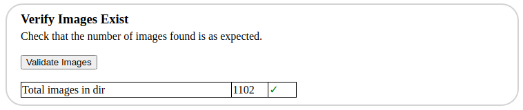
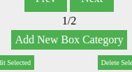
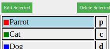
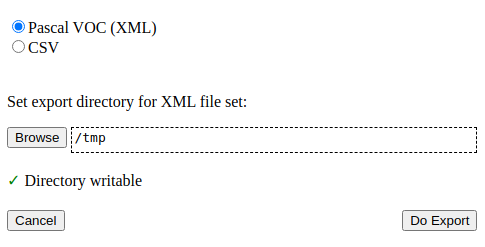

Click "Browse" under Set Images Directory. Choose the diretory containg the images to be labelled.
Sub-directories will also be inspected recursively for images
It is assumed image files have a standard file extension such as .jpg, .jpeg, .gif, .png or .webp
Under "Verify Images Exist", a count of the total number of images found will be shown
If zero images were found, the session cannot proceed. In which case click browse again and choose another directory.

Click "Start Labelling"
Labelling Images
Click the "Add New Box Category" button

Enter a name for the category of object that you would like to label
Optionally enter a single character hotkey.
When the hotkey is typed the category will be selected
Click Done
Add more box categories as required to represent further objects you would like to label
Select a category either by clicking it on the right hand list or typing the hotkey that was set.

Using the mouse draw one or more boxes anywhere over the image. The drawn boxes will be assigned the selected category.
If the position of the drawn box is not quite perfect it can be adjusted slightly using the arrow keys which will cause the box to be nudged by one pixel
The width and height of the drawn box can be adjusted one pixel at a time using Shift + Arrow Keys
To zoom in, use Ctrl + the mouse scrollwheel. Alternatively use Ctrl + Up Arrow or Numpad 8 whilst pointing at the position on the image to be zoomed.
When all required boxes are drawn move to the next image by either clicking "Next" or using Ctrl+the right arrow key. Numpad 6 is a further alternative,
Previously drawn boxes can be selected by Shift+Click
The labelled category of boxes can be modified by selecting the required new category and then clicking box while holding down the right Alt key (often labelled Alt Gr)
Boxes can be be deleted by selecting (Shift+click) then typing either Backspace or Del
Exporting Labelling Data
First save the labelling state using "Save" from the "File" menu. The labeller cannot currently import the export formats, therefore always save a copy in the native format so that the session can be continued later if required.
Choose "Export" from the "File" menu
Choose either Pascal VOC or CSV (Comma Separated Values) format as required.

When using Pascal VOC mode, it is the convention that the labelling data for each image is stored in a separate file. Therefore a directory must chosen where the set of files may be saved.
Choose the directory using the "Browse" button and then click "Do Export". A set of XML files will then be written to the directory (one per image).